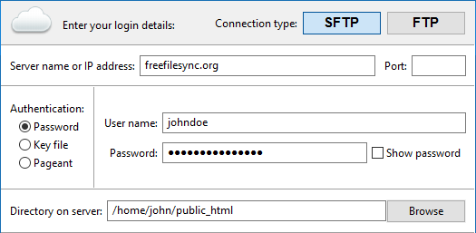

SFTP and FTP Setup (Windows, macOS)
FreeFileSync supports synchronization with SFTP and FTP natively. Just enter your login information into the dialog shown for cloud folder selection:

NoteIn case the (S)FTP server sets file
modification times to the
current time
you can do a
Compare by File Size as a workaround.
Another solution is to set up the
Two way variant and have the files with the newer dates
be copied back from the server during the next synchronization.
Configure SFTP for best performance
By default, FreeFileSync creates one connection to the server and uses one SFTP channel, i.e. only a single SFTP command can be sent and received at a time.
Since most of this time is spent waiting due to the high latency of the remote connection, you can speed up reading large folder hierarchies
by increasing both the connection and channel count.
The folder reading time is reduced by a factor of N x M when using N connections with M channels each.
Example: 10 connections using 2 channels each can yield a 20 times faster folder reading.

- The creation of additional connections and channels takes time. If you are only scanning a small remote folder,
setting up too many connections and channels might actually slow the overall process down.
Creating extra connections is slower than creating extra channels.
- SFTP servers have internal limits on the number of allowed connections and channels.
Generally, servers expect one connection per user, so this number should be kept rather low.
If too many connections and channels are used, the server may decide to stop responding.
- Unlike connections, additional SFTP channels are (currently) only used during folder reading (comparison), but not during synchronization.
Advice
Start with low numbers and make tests with different combinations of connections and channels for your
particular SFTP synchronization scenario to see what gives the highest speed.
Note, however, that FreeFileSync reuses existing SFTP connections/channels.
Therefore, you should restart FreeFileSync before measuring SFTP speed.
SFTP Setup (Linux)
An SFTP share can be mapped to a local folder for use with FreeFileSync: